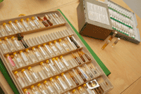

RAC-Pulstest-MethodeDieses diagnostische Verfahren aus der Aurikulomedizin stammt von Dr. Paul Nogier, einem französischen Allgemeinarzt. Der sog. Nogier-Reflex (Reflex, der die Veränderung der Blutströmungs-Verhältnisse bezeichnet) gibt Auskunft über das aktuelle Energiefeld. Mit dem Pulsrefex – am Handgelenk gemessen – lassen sich Allergene, Medikamente, unterstützende wie belastende Substanzen testen. So wird eine differenzierte Beurteilung über den aktuellen Zustand des Körpers möglich. Wir bekommen auch Auskunft über Störfelder, z.B. Zahnherde, chronische Infekte, Schwachstellen etc. Zum Beispiel können Gelenke als Schwachstelle des Organismus mit wiederkehrenden Schmerzen auf ein Ungleichgewicht im Säure-Basen-Haushalt reagieren. Weitere Krankheitsursachen können identifiziert werden
Das geeignete, aktuelle Heilmittel wird samt individueller Dosierung ermittelt. Dieses individualisierte Medizin-Verfahren unterstützt und beschleunigt wesentlich den Gesundungsprozess :-). |
 |